Raff

رفّ
1
اسحب رفّ إلى «التطبيقات»
Drag Raff to Applications
2
افتحه من «التطبيقات»
Open it from Applications
3
إن نبّهك
macOS
: «افتح على أي حال» من الخصوصية والأمن
If macOS warns: Privacy & Security → Open Anyway